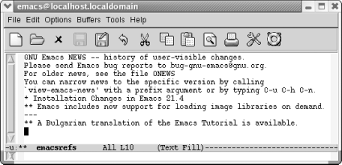

{% include JB/setup %}
{% raw %}
<div>
<div class="book" xml:lang="en"><div class="book"><div class="book"><div class="book"><h1 class="title"><a id="gnu3-CHP-6-SECT-3" class="calibre1"></a>A More Complicated Macro Example</h1></div></div></div><p class="copyright">Sometimes you may want to find all the references to a particular
topic in a file. <a class="calibre2" href="ch06s03.html#gnu3-CHP-6-TABLE-2" title="Table 6-2. Steps for macro that creates a buffer of Emacs references">Table 6-2</a> lists steps for creating a macro that
takes takes every sentence in the buffer that contains the word
<span><em class="calibre7">Emacs</em></span> and copies it to another buffer. If you
try this macro, you'll need to type some text about
Emacs into a buffer. You can also get a test file to work with by
opening the Emacs <span><em class="calibre7">NEWS</em></span> file (using <span><strong class="calibre5">C-h n</strong></span>), then writing it to a file (<span><strong class="calibre5">C-x C-w</strong></span> 
            <span><strong class="calibre5">NEWS</strong></span>). This buffer is in view mode by default;
change to text mode by typing <span><strong class="calibre5">M-x text-mode
Enter</strong></span>.</p><div class="book"><a id="gnu3-CHP-6-TABLE-2" class="calibre2"></a><p class="title2"><b class="calibre25">Table 6-2. Steps for macro that creates a buffer of Emacs references</b></p><div class="table-contents"><a id="gnu3-CHP-6-ITERM-2268" class="calibre2"></a><table summary="Steps for macro that creates a buffer of Emacs references" class="calibre8"><colgroup class="calibre9"><col class="calibre10"/><col class="calibre10"/></colgroup><thead class="calibre11"><tr class="calibre12"><th class="calibre26">
                        <p class="copyright">Keystrokes</p>
                     </th><th class="calibre27">
                        <p class="copyright">Action</p>
                     </th></tr></thead><tbody class="calibre15"><tr class="calibre12"><td class="calibre28">
                        <p class="copyright">
                           <span><strong class="calibre5">F3</strong></span> 
                           <span><em class="calibre7">or</em></span> 
                           <span><strong class="calibre5">C-x (</strong></span>
                        </p>
                     </td><td class="calibre29">
                        <p class="copyright">Start macro definition; <code class="calibre21">Def</code> appears on the mode
line.</p>
                     </td></tr><tr class="calibre12"><td class="calibre28">
                        <p class="copyright">
                           <span><strong class="calibre5">C-s emacs</strong></span>
                        </p>
                     </td><td class="calibre29">
                        <p class="copyright">Find the word Emacs.</p>
                     </td></tr><tr class="calibre12"><td class="calibre28">
                        <p class="copyright">
                           <span><strong class="calibre5">Enter</strong></span>
                        </p>
                     </td><td class="calibre29">
                        <p class="copyright">Stop the search after it is successful; if the search is
unsuccessful, it rings the bell and stops the macro.</p>
                     </td></tr><tr class="calibre12"><td class="calibre28">
                        <p class="copyright">
                           <span><strong class="calibre5">M-a</strong></span>
                        </p>
                     </td><td class="calibre29">
                        <p class="copyright">Move to the beginning of the sentence.<sup class="calibre6">[<a id="gnu3-CHP-6-FNOTE-3" href="#ftn.gnu3-CHP-6-FNOTE-3" class="calibre2">3</a>]</sup>
                        </p>
                     </td></tr><tr class="calibre12"><td class="calibre28">
                        <p class="copyright">
                           <span><strong class="calibre5">C-Space</strong></span>
                        </p>
                     </td><td class="calibre29">
                        <p class="copyright">Set the mark.</p>
                     </td></tr><tr class="calibre12"><td class="calibre28">
                        <p class="copyright">
                           <span><strong class="calibre5">M-e</strong></span>
                        </p>
                     </td><td class="calibre29">
                        <p class="copyright">Move to the end of the sentence.</p>
                     </td></tr><tr class="calibre12"><td class="calibre28">
                        <p class="copyright">
                           <span><strong class="calibre5">M-w</strong></span>
                        </p>
                     </td><td class="calibre29">
                        <p class="copyright">Copy the sentence to the kill ring.</p>
                     </td></tr><tr class="calibre12"><td class="calibre28">
                        <p class="copyright">
                           <span><strong class="calibre5">C-x b emacsrefs Enter</strong></span>
                        </p>
                     </td><td class="calibre29">
                        <p class="copyright">Move to a buffer called <code class="calibre21">emacsrefs</code>.</p>
                     </td></tr><tr class="calibre12"><td class="calibre28">
                        <p class="copyright">
                           <span><strong class="calibre5">C-y</strong></span>
                        </p>
                     </td><td class="calibre29">
                        <p class="copyright">Insert the sentence.</p>
                     </td></tr><tr class="calibre12"><td class="calibre28">
                        <p class="copyright">
                           <span><strong class="calibre5">Enter</strong></span>
                        </p>
                     </td><td class="calibre29">
                        <p class="copyright">Start the next sentence on a new line.</p>
                     </td></tr><tr class="calibre12"><td class="calibre28">
                        <p class="copyright">
                           <span><strong class="calibre5">C-x b Enter</strong></span>
                        </p>
                     </td><td class="calibre29">
                        <p class="copyright">Move back to the original buffer.</p>
                     </td></tr><tr class="calibre12"><td class="calibre30">
                        <p class="copyright">
                           <span><strong class="calibre5">F4</strong></span> 
                           <span><em class="calibre7">or</em></span> 
                           <span><strong class="calibre5">C-x )</strong></span>
                        </p>
                     </td><td class="calibre31">
                        <p class="copyright">End the macro definition; <code class="calibre21">Def</code> is removed from the
mode line.</p>
                     </td></tr></tbody><tbody class="calibre15"><tr class="calibre12"><td colspan="2" class="calibre31"><div class="book"><p class="copyright"><sup class="calibre6">[<a id="ftn.gnu3-CHP-6-FNOTE-3" href="#gnu3-CHP-6-FNOTE-3" class="calibre2">3</a>] </sup>
                                 <span><strong class="calibre5">M-a</strong></span>'s definition of a
"sentence" is controlled by the
variable <span><strong class="calibre5">sentence-end</strong></span>, which is a
fairly complex regular expression. By default, a sentence ends with a
period, question mark, or exclamation mark, optionally followed by a
quotation mark or parenthesis (including brackets or braces), and
followed by two or more spaces or a newline.</p></div></td></tr></tbody></table></div></div><br class="book"/><p class="copyright">Now, assume that you've already constructed the
macro outlined in <a class="calibre2" href="ch06s03.html#gnu3-CHP-6-TABLE-2" title="Table 6-2. Steps for macro that creates a buffer of Emacs references">Table 6-2</a> and that you can
invoke it with <span><strong class="calibre5">F4</strong></span>. The following
screen shows what happens when you run it five times and then display
the <code class="calibre21">emacsrefs</code> buffer.</p><div class="book"><a id="ch06-5-fm2xml" class="calibre2"></a><table class="calibre8"><colgroup class="calibre9"><col class="calibre10"/></colgroup><tbody class="calibre15"><tr class="calibre12"><td class="calibre17">
                        <p class="copyright">Type: <span><strong class="calibre5">M-5 F4</strong></span> or <span><strong class="calibre5">M-5 C-x e</strong></span>, followed by
<span><strong class="calibre5">C-x b Enter</strong></span>
                        </p>
                     </td></tr><tr class="calibre12"><td class="calibre17">
                        <p class="copyright">
                           </p><div class="book"><div class="mediaobject"><a id="I_6_tt176" class="calibre2"></a></div></div><p class="copyright">
                        </p>
                     </td></tr><tr class="calibre12"><td class="calibre19">
                        <p class="copyright">By executing the macro repeatedly, we've created a
buffer that contains references to the Emacs editor.</p>
                     </td></tr></tbody></table></div><p class="copyright">As in the previous example, you can jump back and forth between an
unlimited number of buffers while defining a macro. Macros
don't need to be confined to one buffer. Macros that
work with several buffers are more difficult to debug; when several
buffers are involved, it becomes harder for you to keep track of
where the cursor and the mark are. It is also easy to make mistaken
assumptions about what buffer you're visiting;
hence, it's a good idea to specify the buffer name
explicitly. However, after you get accustomed to working with macros
and multiple buffers, you'll be amazed at how much
work you can do with almost no effort.</p><p class="copyright">Windows are sometimes useful in macros, but, again, you have to watch
out. It's better to start a macro with one window on
the screen, have the macro open other windows, and finally close all
but one window (<span><strong class="calibre5">C-x 1</strong></span>). If you write
a macro with two windows on the screen and later try to execute it
with four windows on the screen, the results will be unpredictable at
best! In general, moving to a named buffer, <span><strong class="calibre5">C-x
b</strong></span> 
            <em class="calibre7"><code class="calibre21">buffername</code></em>, is preferable to
moving to the "other" window using
<span><strong class="calibre5">C-x o</strong></span> (too vague to be generally
useful). The other window could be anything—a
<code class="calibre21">*Help*</code> buffer, <code class="calibre21">*Completion*</code>
buffer, <code class="calibre21">*shell*</code> buffer, and so on. Moving to a
named buffer always gets you to the right place, no matter how (or
whether) the buffer is displayed.</p></div></div>

{% endraw %}

